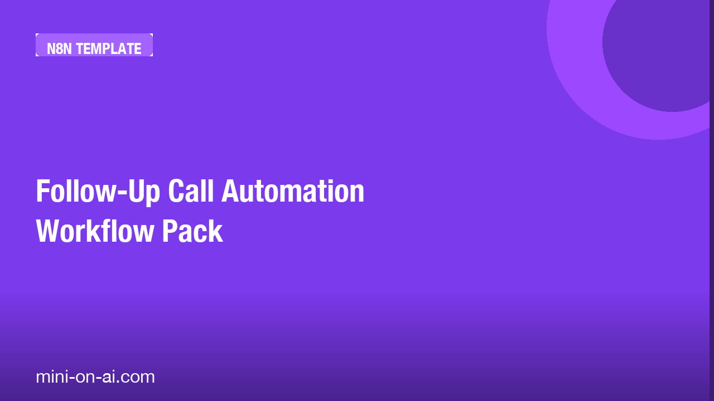

Follow-Up Call Automation Workflow Pack
A ready-to-deploy n8n workflow that automatically logs unanswered calls, schedules follow-up reminders, and tracks callback completion for small business owners managing high call volumes.
10-node workflow
Get it free →
Every missed call that doesn't get followed up is a lost sale — and manually tracking them is a full-time job you didn't sign up for.
This n8n workflow handles it automatically, from the moment a call goes unanswered to the moment you mark it resolved.
Who this is for:
— Solo service providers juggling calls between jobs (plumbers, cleaners, contractors)
— Small agency owners who can't afford to let leads slip through the cracks
— Operations managers tired of chasing staff to confirm callbacks happened
What's inside:
— 10-node n8n workflow that logs missed calls, queues reminders, and closes the loop when callbacks are confirmed
— Importable JSON file — drop it into your n8n instance and it's live in minutes
— Plain-English setup guide so you're not guessing at configuration
No monthly fees. No extra software. Just a workflow that runs quietly in the background while you focus on actual work.
Download and use it today.
Discover more tools like this at mini-on-ai.com